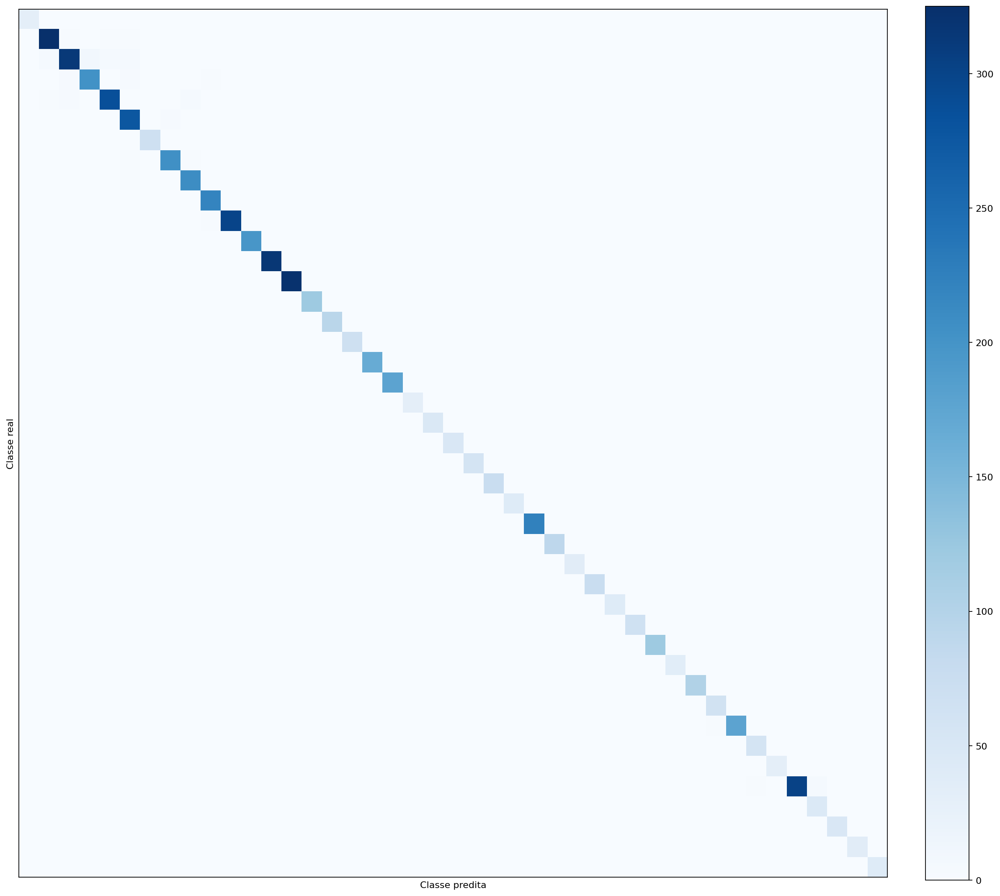
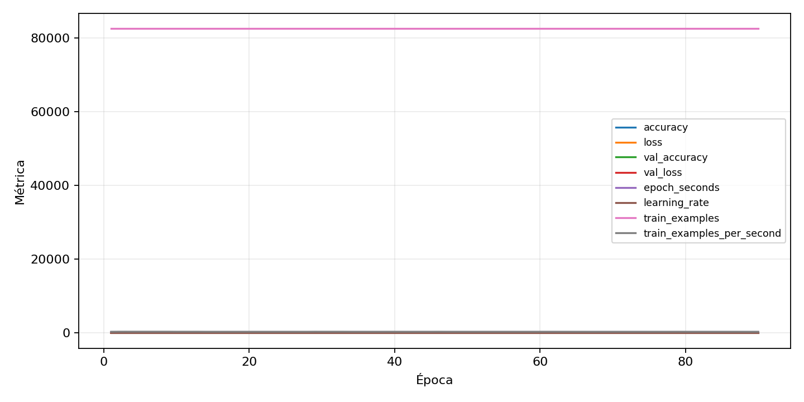

| n_samples | 5876 |
|---|---|
| loss | 0.055792998522520065 |
| accuracy | 0.9828114363512593 |
| balanced_accuracy | 0.9883814794992782 |
| macro_f1 | 0.9856896443849041 |


| Índice | Classe | Suporte | Precisão | Recall | F1 |
|---|---|---|---|---|---|
| 0 | 0 | 31 | 0.96875 | 1.0 | 0.9841269841269841 |
| 1 | 1 | 333 | 0.9730538922155688 | 0.975975975975976 | 0.9745127436281859 |
| 2 | 2 | 337 | 0.9720496894409938 | 0.9287833827893175 | 0.9499241274658574 |
| 3 | 3 | 211 | 0.9439252336448598 | 0.957345971563981 | 0.9505882352941175 |
| 4 | 4 | 297 | 0.9761092150170648 | 0.9629629629629629 | 0.9694915254237287 |
| 5 | 5 | 283 | 0.9484536082474226 | 0.9752650176678446 | 0.9616724738675959 |
| 6 | 6 | 67 | 1.0 | 1.0 | 1.0 |
| 7 | 7 | 211 | 0.9808612440191388 | 0.9715639810426541 | 0.9761904761904763 |
| 8 | 8 | 211 | 0.9631336405529954 | 0.990521327014218 | 0.9766355140186915 |
| 9 | 9 | 220 | 0.9776785714285714 | 0.9954545454545455 | 0.9864864864864865 |
| 10 | 10 | 301 | 0.9933554817275747 | 0.9933554817275747 | 0.9933554817275747 |
| 11 | 11 | 198 | 1.0 | 0.98989898989899 | 0.9949238578680203 |
| 12 | 12 | 315 | 0.9968354430379747 | 1.0 | 0.9984152139461173 |
| 13 | 13 | 324 | 0.9969040247678018 | 0.9938271604938271 | 0.9953632148377125 |
| 14 | 14 | 121 | 1.0 | 1.0 | 1.0 |
| 15 | 15 | 94 | 0.96875 | 0.9893617021276596 | 0.9789473684210526 |
| 16 | 16 | 67 | 1.0 | 1.0 | 1.0 |
| 17 | 17 | 166 | 1.0 | 1.0 | 1.0 |
| 18 | 18 | 180 | 0.9943820224719101 | 0.9833333333333333 | 0.9888268156424581 |
| 19 | 19 | 31 | 1.0 | 1.0 | 1.0 |
| 20 | 20 | 49 | 1.0 | 0.9591836734693877 | 0.9791666666666666 |
| 21 | 21 | 49 | 1.0 | 1.0 | 1.0 |
| 22 | 22 | 58 | 1.0 | 1.0 | 1.0 |
| 23 | 23 | 76 | 1.0 | 0.9868421052631579 | 0.9933774834437086 |
| 24 | 24 | 40 | 1.0 | 1.0 | 1.0 |
| 25 | 25 | 225 | 0.9911111111111112 | 0.9911111111111112 | 0.9911111111111112 |
| 26 | 26 | 90 | 0.9782608695652174 | 1.0 | 0.989010989010989 |
| 27 | 27 | 36 | 0.972972972972973 | 1.0 | 0.9863013698630138 |
| 28 | 28 | 76 | 0.9868421052631579 | 0.9868421052631579 | 0.9868421052631579 |
| 29 | 29 | 40 | 1.0 | 1.0 | 1.0 |
| 30 | 30 | 67 | 0.9705882352941176 | 0.9850746268656716 | 0.9777777777777777 |
| 31 | 31 | 121 | 0.9918032786885246 | 1.0 | 0.9958847736625513 |
| 32 | 32 | 36 | 1.0 | 0.9722222222222222 | 0.9859154929577464 |
| 33 | 33 | 103 | 0.9902912621359223 | 0.9902912621359223 | 0.9902912621359223 |
| 34 | 34 | 63 | 0.9538461538461539 | 0.9841269841269841 | 0.96875 |
| 35 | 35 | 180 | 1.0 | 0.9833333333333333 | 0.9915966386554621 |
| 36 | 36 | 58 | 0.95 | 0.9827586206896551 | 0.9661016949152542 |
| 37 | 37 | 31 | 0.96875 | 1.0 | 0.9841269841269841 |
| 38 | 38 | 310 | 1.0 | 0.9709677419354839 | 0.9852700490998363 |
| 39 | 39 | 45 | 0.9 | 1.0 | 0.9473684210526316 |
| 40 | 40 | 49 | 1.0 | 1.0 | 1.0 |
| 41 | 41 | 36 | 0.972972972972973 | 1.0 | 0.9863013698630138 |
| 42 | 42 | 40 | 1.0 | 1.0 | 1.0 |
{"adapter":"gtsrb","balance_mode":"class_weight","class_names":["0","1","2","3","4","5","6","7","8","9","10","11","12","13","14","15","16","17","18","19","20","21","22","23","24","25","26","27","28","29","30","31","32","33","34","35","36","37","38","39","40","41","42"],"dataset":"gtsrb","dataset_options":{},"dataset_root":"/home/msduda/datasets-tcc/gtsrb","native_channels":3,"normalization":"zscore","num_classes":43,"protocol":{"checkpoint_monitor":"val_macro_f1","dtype_policy":"mixed_float16","early_stopping":{"patience":10,"restore_best_weights":true},"evaluation_augmentation":false,"input_channels":"native","optimizer":"Adam","pretrained_weights":false,"reduce_lr_on_plateau":{"factor":0.3,"min_lr":1e-07,"patience":4},"resize":"proportional_padding","test_time_augmentation":false,"training_from_scratch":true},"seed":42,"source_fingerprint":"e07bdb2a0cbaaa95924cda55fec26c2902b0cc736e3c6de8531ff96b0c7ee2e8","source_manifest":{"class_names":["0","1","2","3","4","5","6","7","8","9","10","11","12","13","14","15","16","17","18","19","20","21","22","23","24","25","26","27","28","29","30","31","32","33","34","35","36","37","38","39","40","41","42"],"joined_samples":39270,"metadata":{"layout":"gtsrb-folders-or-csv"},"name":"gtsrb","native_channels":3,"source_path":"/home/msduda/datasets-tcc/gtsrb","splits":{"test":12630,"train":26640},"target_size":128},"target_size":128,"test_fraction":0.15,"train_fraction":0.7,"training":{"augmentation":{"brightness_delta":0.03,"contrast_lower":0.92,"contrast_upper":1.08,"cutout_max_frac":0.08,"cutout_prob":0.25,"flip_lr":true,"noise_std":0.005,"translate_frac":0.05,"zoom_max":1.04,"zoom_min":0.96},"batch_size":512,"default_image_size":64,"dtype_policy":"mixed_float16","early_stopping_patience":10,"extra_fraction":2.0,"image_size_overrides":{"gtsrb":128},"keras_verbose":1,"learning_rate":0.0003,"max_epochs":100,"preprocess_cache_max_mib":2048,"reduce_lr_factor":0.3,"reduce_lr_min_lr":1e-07,"reduce_lr_patience":4,"shuffle_buffer_max_mib":1024},"validation_fraction":0.15}
{"epochs_completed":90,"epochs_recorded":90,"evaluation_seconds":17.38157299600425,"fit_seconds_current_attempt":23357.280461931005,"max_epoch_seconds":262.1631310029916,"max_epochs":100,"mean_epoch_seconds":255.23046086657803,"mean_train_examples_per_second":323.26207438184673,"median_train_examples_per_second":320.901134141983,"min_epoch_seconds":240.38375317001191,"selected_checkpoint":"/mnt/e/tcc-benchmark/outputs/remaining-ram-capped/gtsrb/runs/gtsrb__zscore__class_weight__seed-42/checkpoints/best.keras","total_seconds":22970.741477992022,"training_seconds":22970.741477992022,"wall_seconds_current_attempt":23418.597947378992}
{"elapsed_seconds":23418.762514071,"event_counts":{"data_preparation_end":1,"data_preparation_start":1,"epoch_end":90,"evaluation_end":1,"evaluation_start":1,"fit_end":1,"fit_start":1,"periodic":4617,"run_completed":1,"train_start":1},"generated_at":"2026-08-02T10:03:06.216+00:00","gpu_backend":"pynvml","interval_seconds":5.0,"metrics":{"cpu_percent":{"count":4715,"max":18.1,"mean":10.612322375397667,"min":0.0,"p50":10.6,"p95":11.6},"disk_data_free_bytes":{"count":4715,"max":998397075456.0,"mean":998258681971.9738,"min":998188863488.0,"p50":998258618368.0,"p95":998258954240.0},"disk_data_percent":{"count":4715,"max":2.7,"mean":2.7,"min":2.7,"p50":2.7,"p95":2.7},"disk_data_total_bytes":{"count":4715,"max":1081101176832.0,"mean":1081101176832.0,"min":1081101176832.0,"p50":1081101176832.0,"p95":1081101176832.0},"disk_data_used_bytes":{"count":4715,"max":27919958016.0,"mean":27850139532.0263,"min":27711746048.0,"p50":27850203136.0,"p95":27850203136.0},"disk_output_free_bytes":{"count":4715,"max":248534409216.0,"mean":248518306380.55566,"min":248514650112.0,"p50":248518266880.0,"p95":248520955084.8},"disk_output_percent":{"count":4715,"max":75.2,"mean":75.2,"min":75.2,"p50":75.2,"p95":75.2},"disk_output_total_bytes":{"count":4715,"max":1000186310656.0,"mean":1000186310656.0,"min":1000186310656.0,"p50":1000186310656.0,"p95":1000186310656.0},"disk_output_used_bytes":{"count":4715,"max":751671660544.0,"mean":751668004275.4443,"min":751651901440.0,"p50":751668043776.0,"p95":751671246848.0},"elapsed_seconds":{"count":4715,"max":23418.609236,"mean":11710.654503335736,"min":0.027693,"p50":11708.382802,"p95":22267.052386800002},"gpu_count":{"count":4715,"max":1.0,"mean":1.0,"min":1.0,"p50":1.0,"p95":1.0},"gpu_memory_percent":{"count":4715,"max":95.48115730285645,"mean":90.89961966173773,"min":81.76274299621582,"p50":92.00224876403809,"p95":92.72160530090332},"gpu_memory_total_bytes":{"count":4715,"max":8589934592.0,"mean":8589934592.0,"min":8589934592.0,"p50":8589934592.0,"p95":8589934592.0},"gpu_memory_used_bytes":{"count":4715,"max":8201768960.0,"mean":7808217873.320043,"min":7023366144.0,"p50":7902932992.0,"p95":7964725248.0},"gpu_temperature_c":{"count":4715,"max":59.0,"mean":51.83944856839873,"min":39.0,"p50":51.0,"p95":56.0},"gpu_utilization_percent":{"count":4715,"max":100.0,"mean":26.67953340402969,"min":0.0,"p50":7.0,"p95":97.0},"process_cpu_percent":{"count":4715,"max":208.9,"mean":125.87828207847295,"min":0.0,"p50":125.7,"p95":134.9},"process_read_bytes":{"count":4715,"max":474505216.0,"mean":474505216.0,"min":474505216.0,"p50":474505216.0,"p95":474505216.0},"process_rss_bytes":{"count":4715,"max":9511731200.0,"mean":9086549742.354189,"min":5423030272.0,"p50":9155878912.0,"p95":9355689984.0},"process_vms_bytes":{"count":4715,"max":53470162944.0,"mean":52225508445.16988,"min":49748361216.0,"p50":52177883136.0,"p95":52800122880.0},"process_write_bytes":{"count":4715,"max":1241088.0,"mean":1241088.0,"min":1241088.0,"p50":1241088.0,"p95":1241088.0},"ram_available_bytes":{"count":4715,"max":11213733888.0,"mean":7552430436.173913,"min":7129116672.0,"p50":7484035072.0,"p95":8120088985.6},"ram_percent":{"count":4715,"max":57.1,"mean":54.555864262990454,"min":32.5,"p50":55.0,"p95":56.2},"ram_total_bytes":{"count":4715,"max":16619089920.0,"mean":16619089920.0,"min":16619089920.0,"p50":16619089920.0,"p95":16619089920.0},"ram_used_bytes":{"count":4715,"max":9489973248.0,"mean":9066659483.826086,"min":5405356032.0,"p50":9135054848.0,"p95":9337995673.6}},"sample_count":4715,"schema_version":1}